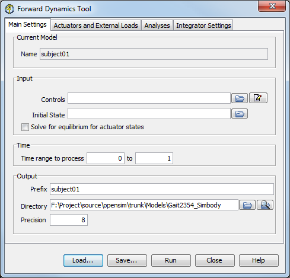
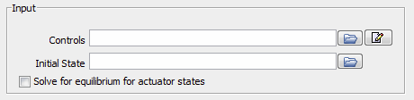
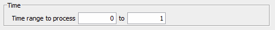
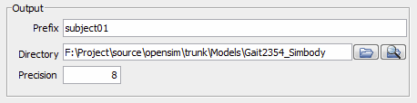
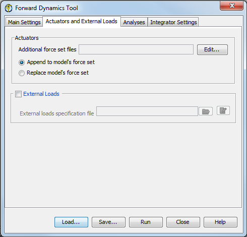
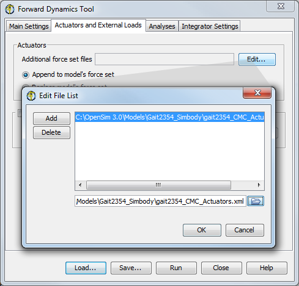
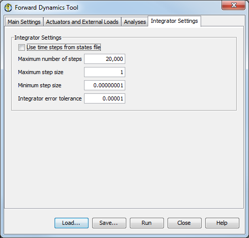

The Forward Dynamics Tool is accessed by selecting Tools → Forward Dynamics… from the OpenSim main menu bar. Like all tools, the operations performed by the Forward Dynamics Tool apply to the current model. The name of the current model is shown in bold in the Navigator. See chapters Opening, Closing, and Using the Navigator Window for information on opening models and making a particular model current.
As of 3.1, you can also use the Simulation Controls in the toolbar to quickly run a simulation. See the section on the Toolbar to learn more.
The Forward Dynamics Tool is controlled by a window with three tabbed panes (figure below).
|  | The Main Settings pane specifies parameters relating to the controls and states that will be input into the model, the time range for the simulation, and the output of the results. The Actuators and External Loads pane specifies the actuator set and the external loads applied to the model during the simulation. The Integrator Settings pane specifies integrator step sizes and tolerances used to solve the simulation. The controls and states from the CMC solution are used to drive the forward simulation of the recorded movement.
|
|---|
Figure: Window for the Forward Dynamics Tool, Saving and Loading Settings
At the bottom of all the Tool dialog windows are four buttons, located in what we call the Control Panel.
 | - The Load and Save buttons are used to load or save settings for the tool.
- The Run button starts execution.
- The Close button closes the window.
- The Help button takes you to the relevant section of the User Guide.
 | Note that the Close button can be clicked immediately after execution has begun; the execution will complete even though the window has been closed. |
- If you click Load…, you will be presented with a file browser that displays all files ending with the .xml suffix. You may browse for an appropriate settings file (e.g., subject01_Forward_Setup.xml or subject01_Scale_Setup.xml)) and click Open. The tool will then be populated with the settings in that setup file.
- If you have manually entered or modified settings, you may save those settings to a file for future use. If you click Save…, a Save dialog box will come up in which you can specify the name of the settings file. The name you specify for the file should have a suffix of .xml. Click Save to save the settings to file.
After you click Save, you may be presented with another dialog box that asks you whether or not you would like to save some of the settings to separate external files. This can be useful if you would like to reuse those settings for other trials or subjects. Check the boxes of the settings that you'd like to save to external files and specify the names of these files. All of these files should have a suffix of .xml.
|
|---|
Main Settings Pane
The Main Settings pane is used to specify parameters relating to the subject data, the generic model, and how the model is to be scaled. The pane is organized into four main sections entitled Current Model, Input, Time, and Output.
 | |
|---|
|  | - The section for Input displays editable information that allows you to specify the controls and states or motion to be used to run the forward simulation, as discussed in How Forward Dynamics Works.
- You may use the folder button to browse for the controls and states or motion files. Both these settings are optional with the default behavior to use zero value for controls if none is specified and to use the inital pose of the model in case no initial states file is specified.
- Since most OpenSim muscle models have internal states (e.g. Fiberlength and Activation for many muscle models), the check box to "solve for equilibrium of actuator states" is provided to allow the muscles to initialize to reasonable non-zero fiberlength if the initial states file does not contain values for these muscle states or if an initial states file is not specified altogether. This is done by computing a fiber length for the muscle that is consistent with the muscle's activation level.
|
|  | - The section for Time displays editable information that allows you to specify the start and end time for the forward simulation.
|
|  | - The section for Output displays editable information that allows you to specify the prefix appended to all of the resulting output files, the directory to which the files are saved, and the precision of the decimal places used when writing results.
- You may use the folder button to browse for and specify a directory in which to save the output files.
- You may use the button to open an Explorer window to the specified directory.
|
The Actuators and External Loads pane is used to specify parameters relating to the actuators appended to the model and the external loads applied to the model during the forward dynamic simulation. The pane is organized into two main sections entitled Actuators and External Loads.
|  | The section for Actuators displays editable information that allows you to specify additional force set files that specify forces to supplement the muscles of the model, as discussed in How Forward Dynamics Works. You may use the  button to edit the list of force set files describing the forces to be appended to or replaced in the model. button to edit the list of force set files describing the forces to be appended to or replaced in the model.
|
|---|
|  | - The information in the External Loads section is optional.
- If checked, the section displays information so that you can specify the external loads applied to the model.
- Please refer to the section on ExternalLoads specification under the How to Use the Inverse Dynamics Tool for more details.
|
Analyses can be performed while running forward simulation by including them on the Analysis pane. The main purpose for the forward dynamics step, besides validating the CMC results in a basic open-loop forward dynamics system, is to record additional simulation data. Getting additional output data from the Forward Dynamics Tool is done through the use of analyses. These are not unique to the Forward Dyanamics Tool and in fact, analyses can be added to RRA and CMC as well. But since forward runs are significantly faster than CMC, it is more practical to tweak and re-run forward simulations to obtain new data rather than re-run CMC.
The basic analyses of interest are:
- Kinematics: Records the generalized coordinates (q's), generalized speeds (u's), and the accelerations (i.e., derivatives of the generalized speeds: du/dt)
- BodyKinematics: Records the configuration (center of mass position and orientation) of each body, as well as their velocities (linear and angular) and accelerations (linear and angular). Additionally, it records the overall center of mass of the model, as well as the velocity and acceleration of this center of mass.
- Actuation: Records the generalized force, speed, and power developed by each actuator of the model. The generalized force can either be a force (with units N) or a torque (with units Nm). The actuator speed is the rate at which the actuator shortens. Depending on the actuator, a speed can be either a translational speed (m/s) or an angular speed (deg/s). An actuator power (Watts) is the rate at which an actuator does work. Positive work means that the actuator is delivering energy to the model; negative power means that the actuator is absorbing energy from the model.
| See the section on Analyses for more information and different types of analyses. |
The Integrator Settings pane is used to specify parameters of the numerical integrator used during the simulation.
If using controls from Computed Muscle Control, It is recommended that you use the same integration time steps. To do so:
|  | Select the checkbox next to Use time steps from states file. You can also manually input the integrator settings. Deselect the checkbox next to Use time steps from states file. Enter appropriate values in the textboxes for Integrator steps and Integrator tolerances.
|
|---|
The Forward Dynamics Tool is run using the command forward -S <setup file name>, for example,
forward -S subject01_Setup_Forward.xml
{kind=link}
{kind=link}
{kind=link}
{kind=link}
{kind=link}
{kind=link}
{kind=link}
{kind=link}